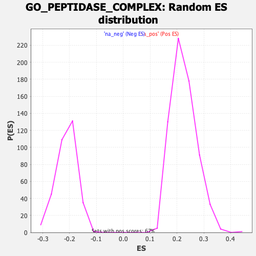

| | | Dataset | CK_basal |
| Phenotype | NoPhenotypeAvailable |
| Upregulated in class | na_neg |
| GeneSet | GO_PEPTIDASE_COMPLEX |
| Enrichment Score (ES) | -0.47267282 |
| Normalized Enrichment Score (NES) | -2.230459 |
| Nominal p-value | 0.0 |
| FDR q-value | 0.00604765 |
| FWER p-Value | 0.071 |
Table: GSEA Results Summary
 Fig 1: Enrichment plot: GO_PEPTIDASE_COMPLEX
Fig 1: Enrichment plot: GO_PEPTIDASE_COMPLEX
Profile of the Running ES Score & Positions of GeneSet Members on the Rank Ordered List
| SYMBOL | RANK IN GENE LIST | RANK METRIC SCORE | RUNNING ES | CORE ENRICHMENT | | 1 | SEC11A | 561 | 2.315 | -0.0042 | No |
| 2 | IDE | 911 | 2.092 | 0.0002 | No |
| 3 | PSMB1 | 2441 | 1.524 | -0.0622 | No |
| 4 | TADA3 | 3085 | 1.362 | -0.0807 | No |
| 5 | PSMB9 | 3552 | 1.260 | -0.0913 | No |
| 6 | GPAA1 | 3574 | 1.256 | -0.0789 | No |
| 7 | PSMA4 | 4722 | 1.024 | -0.1270 | No |
| 8 | UBQLN4 | 4833 | 0.998 | -0.1220 | No |
| 9 | PSMD7 | 4955 | 0.976 | -0.1178 | No |
| 10 | SPG7 | 5427 | 0.893 | -0.1325 | No |
| 11 | PSMD9 | 6090 | 0.777 | -0.1583 | No |
| 12 | PSMC3 | 6753 | 0.664 | -0.1853 | No |
| 13 | PSMB11 | 7132 | 0.601 | -0.1983 | No |
| 14 | PIGK | 7158 | 0.595 | -0.1933 | No |
| 15 | F7 | 7279 | 0.573 | -0.1933 | No |
| 16 | ATXN7L3 | 7324 | 0.565 | -0.1895 | No |
| 17 | PSMB10 | 7335 | 0.563 | -0.1841 | No |
| 18 | PSMD8 | 8052 | 0.443 | -0.2162 | No |
| 19 | PSME3 | 8416 | 0.385 | -0.2307 | No |
| 20 | PSMA1 | 8461 | 0.375 | -0.2290 | No |
| 21 | UBQLN1 | 9012 | 0.282 | -0.2543 | No |
| 22 | SUPT20HL1 | 9140 | 0.260 | -0.2580 | No |
| 23 | TAF12 | 9234 | 0.242 | -0.2602 | No |
| 24 | ADRM1 | 9502 | 0.199 | -0.2719 | No |
| 25 | PSMD3 | 9783 | 0.154 | -0.2846 | No |
| 26 | PSMC4 | 9866 | 0.137 | -0.2874 | No |
| 27 | PSMD2 | 9982 | 0.120 | -0.2920 | No |
| 28 | PAAF1 | 10147 | 0.095 | -0.2994 | No |
| 29 | PSMD5 | 10168 | 0.090 | -0.2995 | No |
| 30 | PSMD10 | 10573 | 0.020 | -0.3201 | No |
| 31 | PSMB4 | 10577 | 0.019 | -0.3200 | No |
| 32 | PSMA5 | 10747 | -0.012 | -0.3286 | No |
| 33 | TAF9 | 10958 | -0.050 | -0.3389 | No |
| 34 | PSMB2 | 11471 | -0.139 | -0.3637 | No |
| 35 | PIGS | 11543 | -0.152 | -0.3658 | No |
| 36 | PSMA8 | 11914 | -0.213 | -0.3825 | No |
| 37 | PSMB8 | 12164 | -0.260 | -0.3926 | No |
| 38 | SUPT20HL2 | 12407 | -0.305 | -0.4017 | No |
| 39 | VCP | 12757 | -0.369 | -0.4158 | No |
| 40 | PSMA2 | 12789 | -0.377 | -0.4133 | No |
| 41 | UCHL5 | 13005 | -0.418 | -0.4199 | No |
| 42 | PSMD14 | 13370 | -0.491 | -0.4334 | No |
| 43 | PSMA3 | 13563 | -0.525 | -0.4377 | No |
| 44 | PSMB7 | 13736 | -0.559 | -0.4406 | No |
| 45 | PSMC2 | 13821 | -0.580 | -0.4387 | No |
| 46 | TRRAP | 14154 | -0.642 | -0.4489 | No |
| 47 | PSMD11 | 14286 | -0.666 | -0.4486 | No |
| 48 | PIGT | 14524 | -0.712 | -0.4532 | No |
| 49 | FAP | 14904 | -0.789 | -0.4643 | Yes |
| 50 | SGF29 | 14939 | -0.796 | -0.4575 | Yes |
| 51 | ZFAND2B | 15164 | -0.848 | -0.4600 | Yes |
| 52 | PSMD12 | 15316 | -0.880 | -0.4584 | Yes |
| 53 | PSMA7 | 15351 | -0.887 | -0.4506 | Yes |
| 54 | PSME4 | 15423 | -0.905 | -0.4446 | Yes |
| 55 | TXNL1 | 15470 | -0.918 | -0.4372 | Yes |
| 56 | SPCS1 | 15692 | -0.976 | -0.4382 | Yes |
| 57 | ZFAND2A | 16073 | -1.064 | -0.4463 | Yes |
| 58 | TADA1 | 16075 | -1.065 | -0.4350 | Yes |
| 59 | PSMD4 | 16246 | -1.106 | -0.4320 | Yes |
| 60 | PSMB5 | 16266 | -1.109 | -0.4211 | Yes |
| 61 | UBE3C | 16465 | -1.157 | -0.4189 | Yes |
| 62 | ENY2 | 16693 | -1.223 | -0.4176 | Yes |
| 63 | HTRA2 | 16745 | -1.237 | -0.4070 | Yes |
| 64 | PSME1 | 16788 | -1.248 | -0.3958 | Yes |
| 65 | PSMB6 | 16910 | -1.284 | -0.3884 | Yes |
| 66 | PSMA6 | 16931 | -1.289 | -0.3756 | Yes |
| 67 | PSMC5 | 16999 | -1.309 | -0.3651 | Yes |
| 68 | PSMD1 | 17023 | -1.317 | -0.3522 | Yes |
| 69 | USP14 | 17055 | -1.328 | -0.3396 | Yes |
| 70 | F3 | 17228 | -1.374 | -0.3338 | Yes |
| 71 | PSMB3 | 17482 | -1.457 | -0.3313 | Yes |
| 72 | PSMD13 | 17563 | -1.482 | -0.3196 | Yes |
| 73 | SPCS3 | 17578 | -1.487 | -0.3044 | Yes |
| 74 | PSMC6 | 17602 | -1.495 | -0.2897 | Yes |
| 75 | SUPT20H | 17922 | -1.619 | -0.2888 | Yes |
| 76 | PSMF1 | 18014 | -1.660 | -0.2758 | Yes |
| 77 | PSMD6 | 18142 | -1.718 | -0.2639 | Yes |
| 78 | USP22 | 18177 | -1.734 | -0.2472 | Yes |
| 79 | RAD23B | 18249 | -1.763 | -0.2320 | Yes |
| 80 | UBR1 | 18370 | -1.815 | -0.2188 | Yes |
| 81 | SPCS2 | 18540 | -1.901 | -0.2072 | Yes |
| 82 | PIGU | 18735 | -2.016 | -0.1957 | Yes |
| 83 | RAD23A | 18985 | -2.206 | -0.1849 | Yes |
| 84 | PSME2 | 19093 | -2.317 | -0.1657 | Yes |
| 85 | AFG3L2 | 19117 | -2.345 | -0.1419 | Yes |
| 86 | SEC11C | 19156 | -2.393 | -0.1183 | Yes |
| 87 | UBE3A | 19207 | -2.460 | -0.0946 | Yes |
| 88 | PSMC1 | 19469 | -3.147 | -0.0744 | Yes |
| 89 | HSPB1 | 19501 | -3.352 | -0.0402 | Yes |
| 90 | DNAJB2 | 19517 | -3.877 | 0.0004 | Yes |
Table: GSEA details [plain text format]

Fig 2: GO_PEPTIDASE_COMPLEX: Random ES distribution
Gene set null distribution of ES for GO_PEPTIDASE_COMPLEX